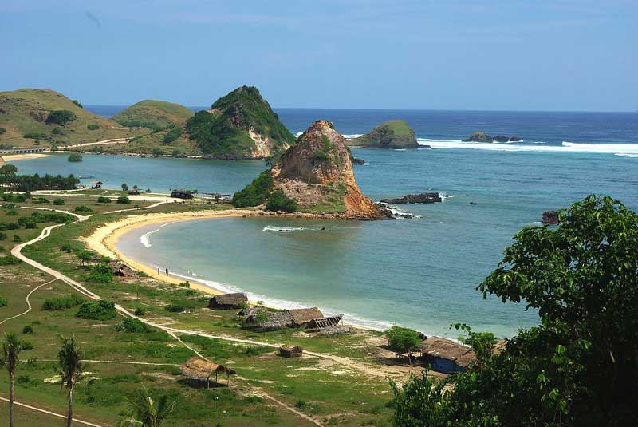

About Lombok
Lombok is a beautiful island located in the West Nusa Tenggara province of Indonesia. Known for its stunning beaches, waterfalls, and mountains, Lombok is a popular destination for travelers seeking adventure, relaxation, and cultural experiences.
Lombok is often referred to as the "unspoiled Bali" due to its similarities with its more famous neighbor, but with a more laid-back and peaceful atmosphere. The island is home to a diverse range of cultures, including the indigenous Sasak people, as well as a rich history and architecture.
Getting to Lombok
The easiest way to get to Lombok is by flying into Lombok International Airport (LOP), which is located in the south of the island. From there, you can take a taxi or bus to your destination.
Best Time to Visit
The best time to visit Lombok is during the dry season, which runs from May to September. This is the peak tourist season, but the weather is warm and sunny, making it ideal for outdoor activities.
Explore the Beauty of Lombok
Discover the top places to visit in Lombok, from stunning beaches to majestic mountains.
Tiu Kelep Waterfall
A stunning waterfall located in the north of Lombok, perfect for swimming and hiking.
Senggigi Beach
A popular beach in the west of Lombok, known for its beautiful sunsets and lively atmosphere.
Mount Rinjani
A active volcano and the second-highest peak in Indonesia, perfect for hiking and trekking.
Gili Islands
A group of small islands off the coast of Lombok, known for their beautiful beaches and vibrant coral reefs.
Find Your Perfect Accommodation in Lombok
From luxury resorts to budget-friendly guesthouses, Lombok has a wide range of accommodation options to suit every traveler's needs.
Lombok Resort
A 5-star resort located on the beach, offering luxurious rooms and suites, as well as a range of amenities and activities.
Lombok Guesthouse
A budget-friendly guesthouse located in the heart of Senggigi, offering simple but comfortable rooms and a warm welcome.
Lombok Villa
A luxurious villa located in a quiet area, offering private pool and garden, as well as a range of amenities and services.
Experience the Best of Lombok's Activities
From snorkeling and diving to hiking and trekking, Lombok offers a wide range of activities for all interests and levels.

Snorkeling
Explore the vibrant coral reefs and marine life of Lombok's coastline.

Hiking
Trek through Lombok's lush forests and rugged landscapes, with breathtaking views of the island.

Surfing
Catch the waves at Lombok's world-class surf spots, suitable for all levels of experience.

Diving
Explore the underwater world of Lombok, with its vibrant coral reefs and diverse marine life.

Yoga
Find your inner peace with yoga classes and retreats in Lombok's serene natural surroundings.

Fishing
Try your luck at catching some of Lombok's famous seafood, with fishing trips and charters available.
Explore the Latest News and Stories from Lombok
Stay up-to-date with the latest news, tips, and stories from Lombok, and get inspired for your next trip.

Discover the Hidden Beaches of Lombok
Explore the lesser-known beaches of Lombok, and experience the island's natural beauty.

A Guide to Hiking Mount Rinjani
Get ready for an adventure of a lifetime with our comprehensive guide to hiking Mount Rinjani.

The Best Local Cuisine in Lombok
Indulge in the flavors of Lombok with our guide to the best local cuisine and restaurants.